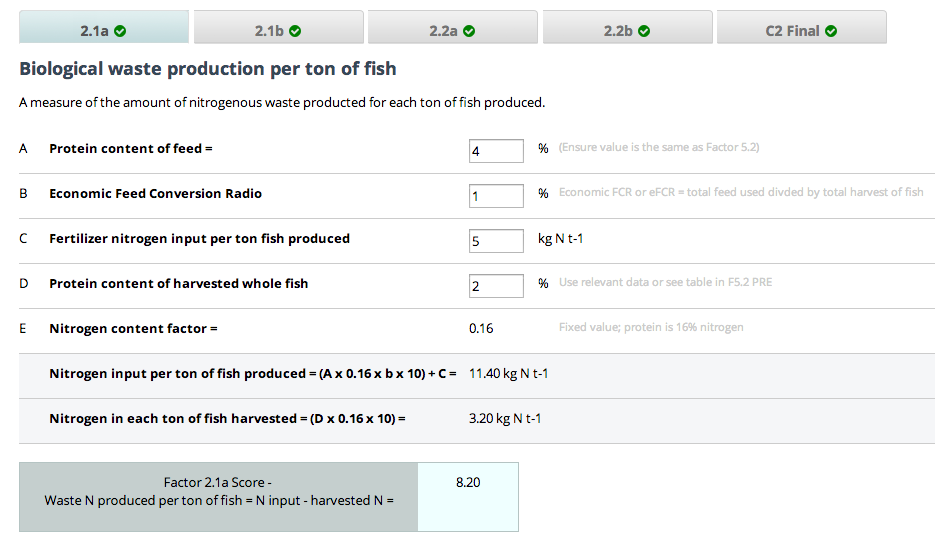
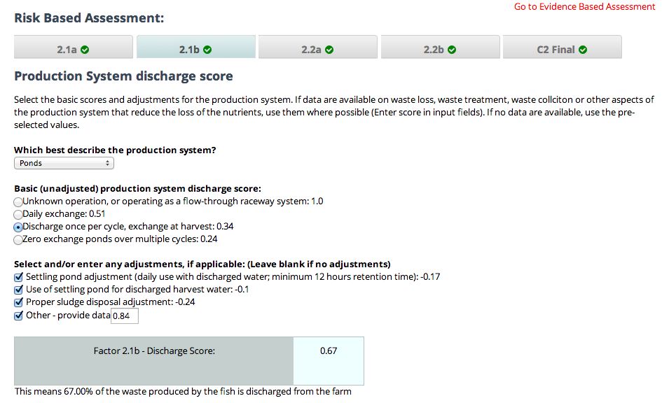
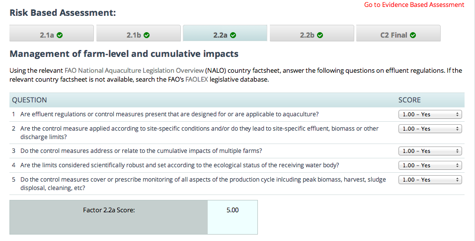
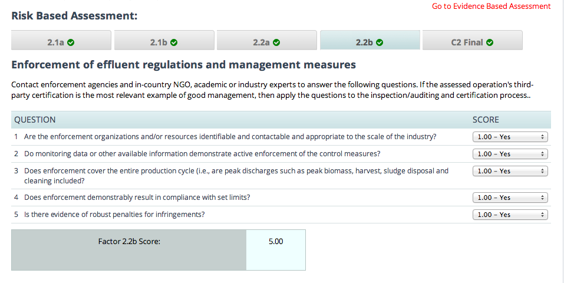
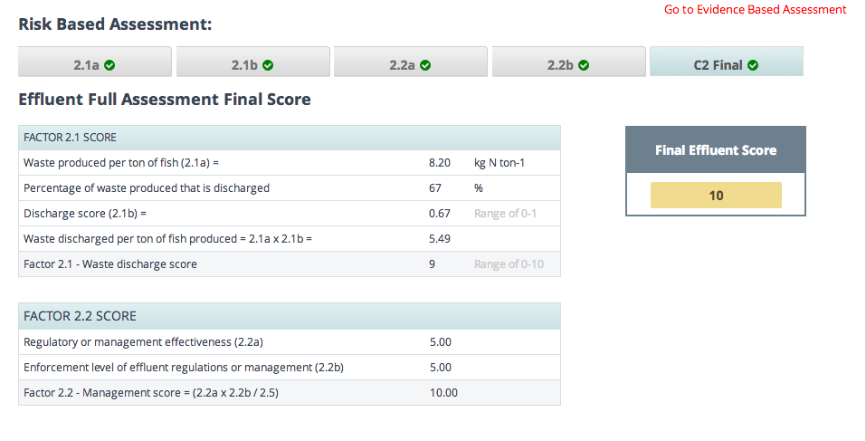
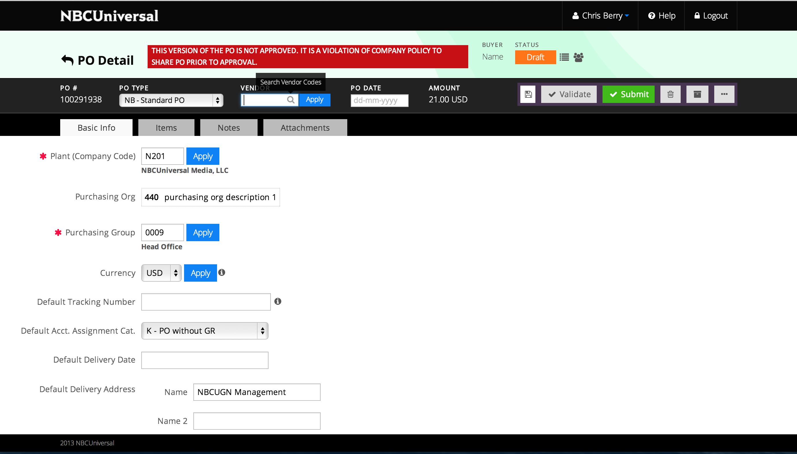
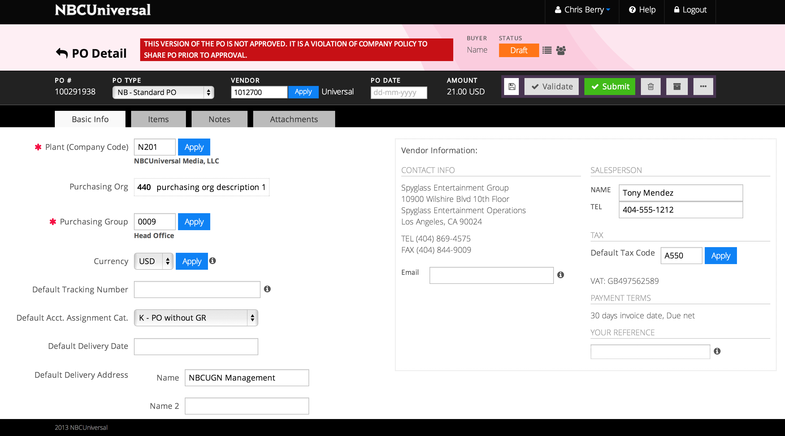
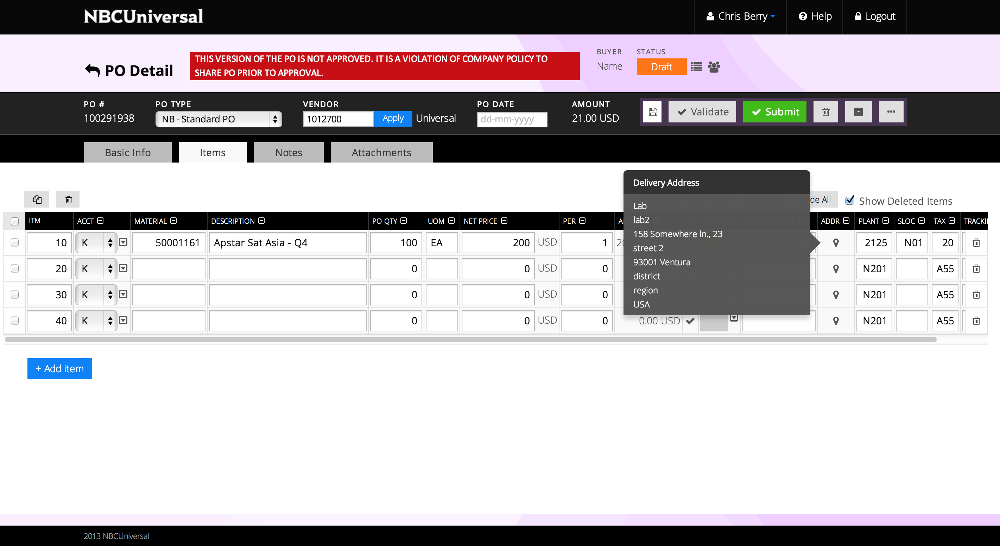
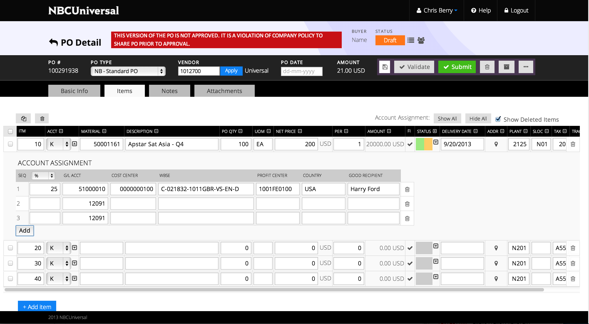
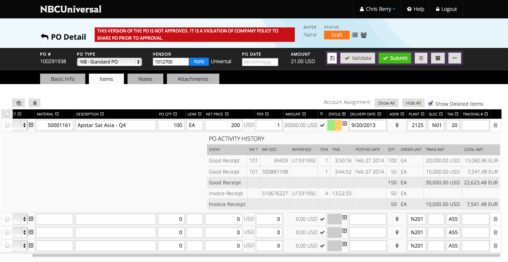

I'm Catherine Zhang, a Los Angeles based web developer. I graduated from the University of Southern California in May 2012, with a degree in Computer Science and an emphasis in web development. I have a passion for technology and an appreciation for modern design on any medium. My experience in web development has primarily been front-end, but I am always open to picking up new languages and frameworks and aiming to move towards becoming a full stack developer.
User Interface Developer
Square One Solutions (Santa Monica, CA)
oct 2013 - present
Develop functional user interfaces tailored to a specific client's business needs
Work closely with back-end dev for integrating end to end
Use latest frameworks that best suit project requirements to build functionality
Implement designs and deliver functionality on given timelines across multiple projects
Computer Systems Technologist / Intern
Raytheon Web Solutions (Pasadena, CA)
june 2012-oct 2013 / june 2011 - june 2012
Work in a team-based environment buiding various cycles of websites
Create themes and extend functionality for content management systems
Develop front-end interactive scripts for education and outreach websites
Develop back-end scripts for internal business systems
Teaching Assistant
ITP 104 (Information Technology Program, USC)
spring 2011
Answered students' questions during lecture and lab
Provided assistance during office hours for assignments and projects
LANGUAGES
Java, HTML/CSS, jQuery, SQL, PHP, JSON
VERSION CONTROL
Git, Mercurial, SVN
OPERATING SYSTEMS
Mac, Windows, Unix
FRAMEWORKS
AngularJS, BackboneJS, CodeIgniter
CMS
Wordpress, Joomla, Magento, Drupal





Monterey Bay Aquarium
Front-end developer
This was a project for which I was solely responsible for the front-end, a site where Monterey Bay fish scientists would enter various types of data regarding different species of fish across 10 criteria, with each criteria page producing a score for that category, and using those 10 scores to produce a final score. The front-end is all angular with the calculations and scoring updating in real time. This was also my first application built in Angular.





NBCUniversal
Front-end developer
This project is an internal website where NBCUniversal employees can keep track of their invoices and purchase orders. This was done in BackboneJS, and a user would be able to go through all stages of creating an invoice, to saving and editing, and as well as viewing and approving. I implemented all of the functionality for this new phase of an existing project with clean and robust code, while also maintaining compability with legacy code.